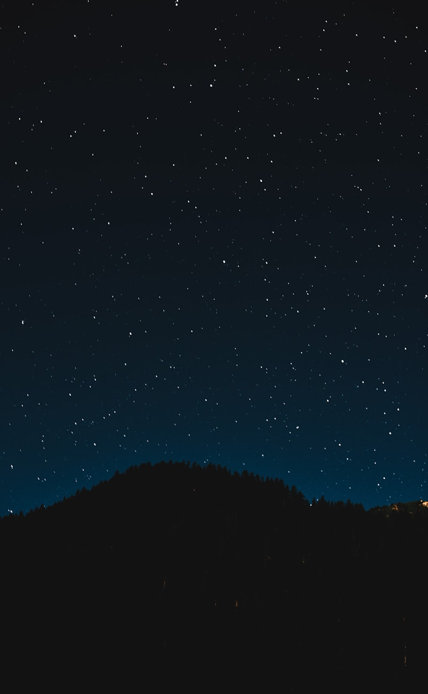

Navigation de nuit — Détroit de Messine

Passage du détroit de Messine de nuit. C'est le passage qu'on redoutait le plus — courants forts, trafic intense, et une réputation de mer chaotique. Résultat : tout s'est bien passé !
On a attendu la renverse de courant à 23h comme recommandé dans le Bloc Marine. Le courant nous a poussés à 3 nœuds supplémentaires — vitesse fond de 11.5 nœuds sans forcer.
Le spectacle nocturne est incroyable : les lumières de Messine et Reggio de Calabre de chaque côté, le Stromboli qui rougeoyait au loin, et un ciel plein d'étoiles au-dessus.
Catherine a assuré le quart de 01h à 04h pendant que je dormais. Aucun problème, elle gère désormais les croisements de nuit avec sang-froid. Fier d'elle.
La fatigue commence à se faire sentir après 3 navigations de nuit en 2 semaines. On va prendre 2-3 jours de repos à Malte.